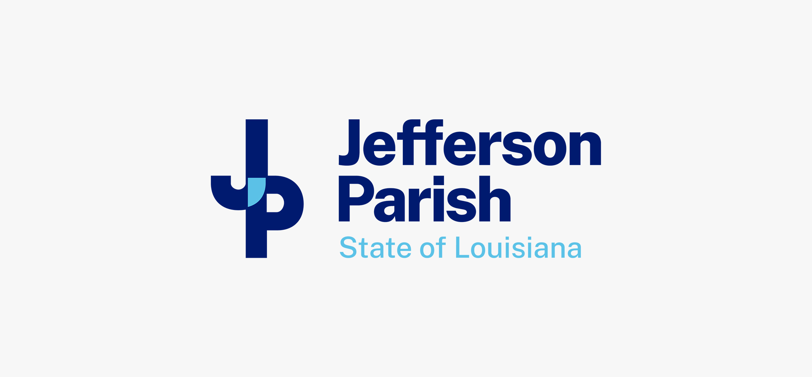
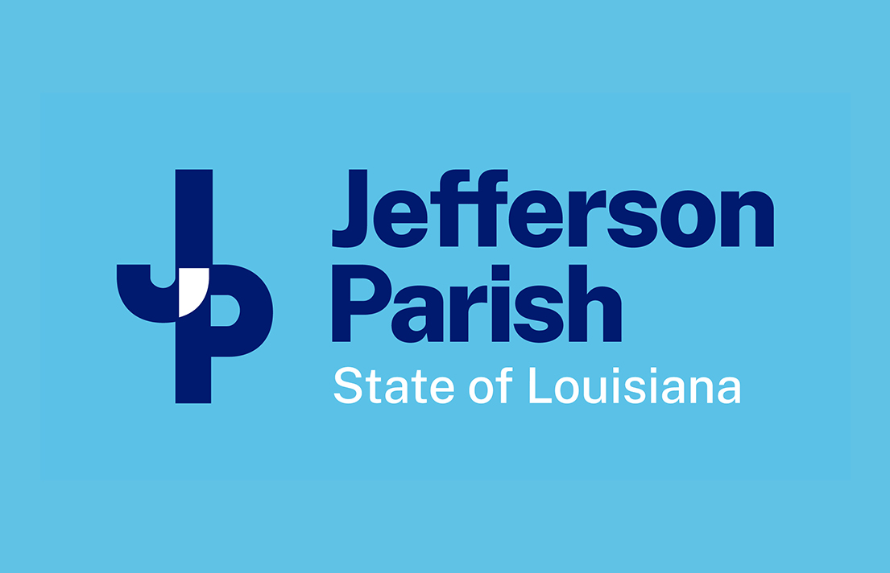
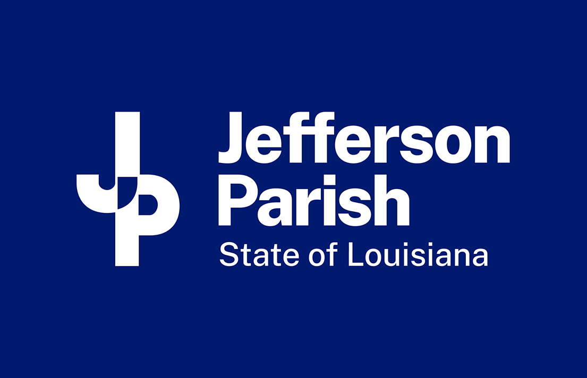
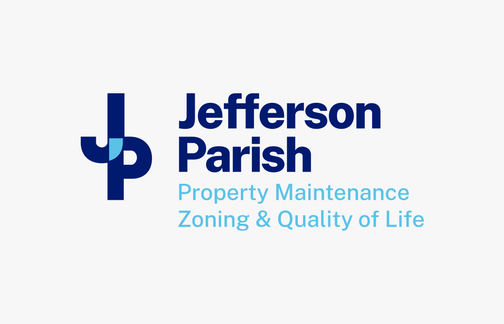
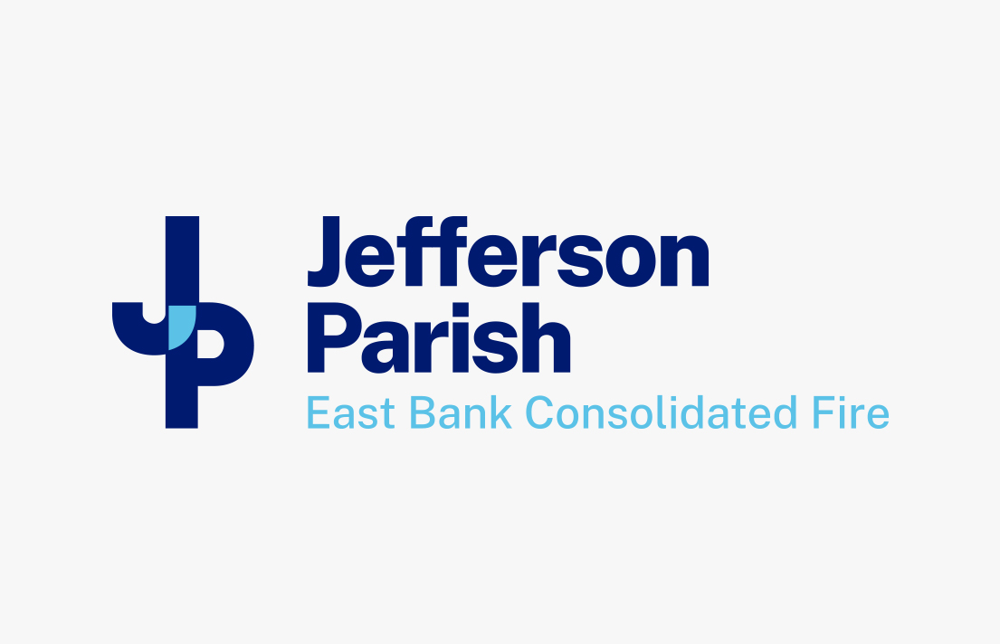
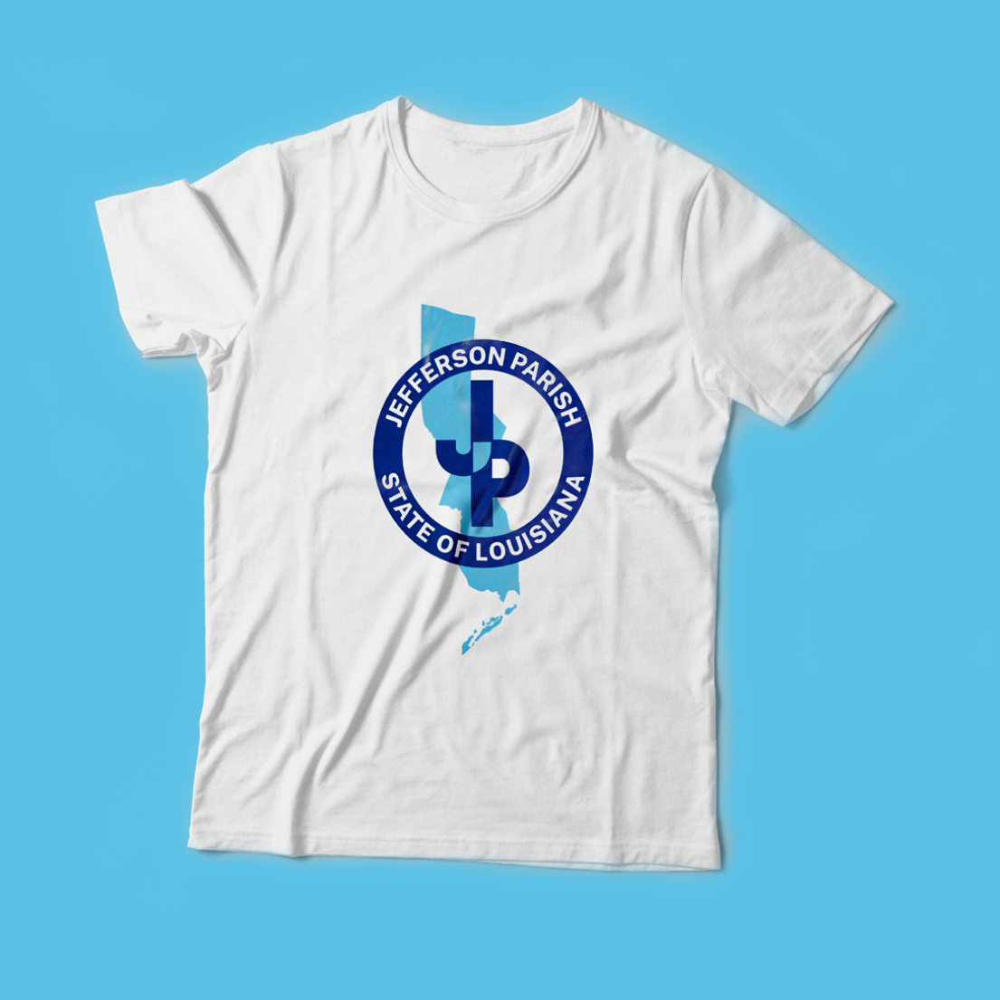
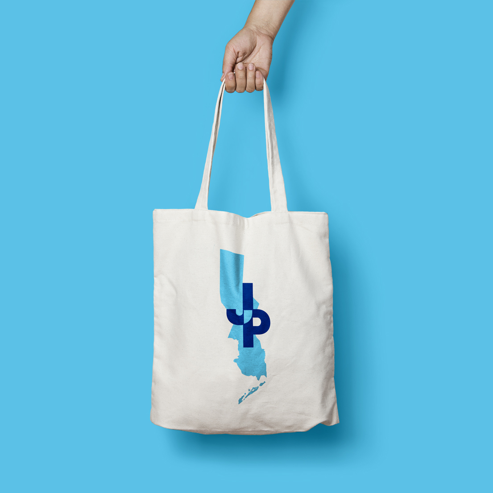
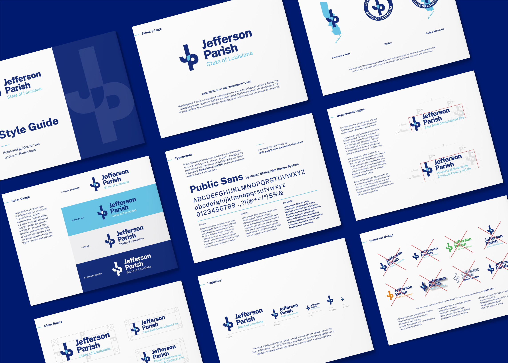

- Client
- Jefferson Chamber Young Professionals
- Agency
- Deep Fried Advertising
- Active
- 2020
- Role
- Lead Design
- Work
- Branding


The elongated JP mark is an abstract representation of the geographical vertical shape of Jefferson Parish. The overlapping letters represent the East and West banks. The intersection of the letters is the Mississippi River that connects the two banks together to unite both communities into one parish.


The primary logo is the standard identity for the government body as a whole. Whereas "State of Louisiana" represents the entire parish, individual offices are typeset in its place to create a subset of logos for all the departments within the parish. The alternative set consists of badges and marks that represent the political boundary of the parish. These additional logos were created for promotional items.



I built out a comprehensive Style Guide for the brand to bring all the elements together. Indigo is a regal color for Louisiana that evokes justice and authority. Blue is for the bodies of water that shape the parish: Lake Pontchartrain, Mississippi River, and Gulf of Mexico. The typeface chosen for the brand is Public Sans, developed by the United States Web Design System.
